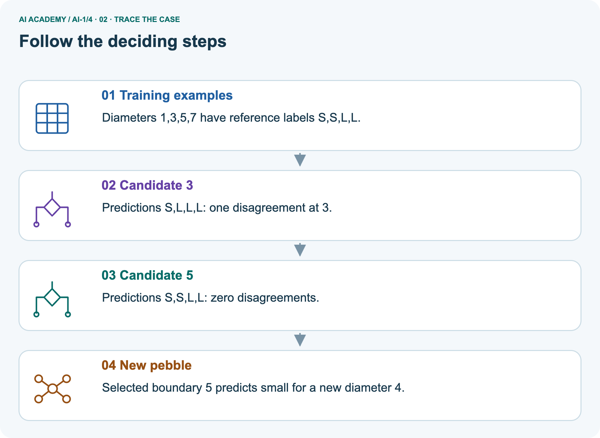
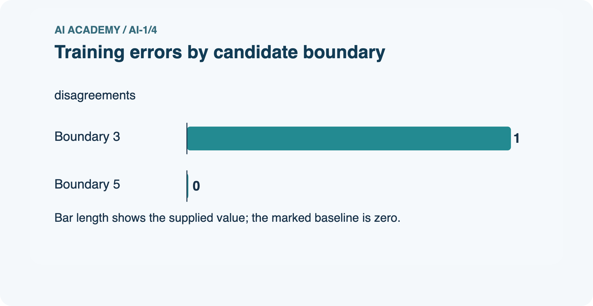
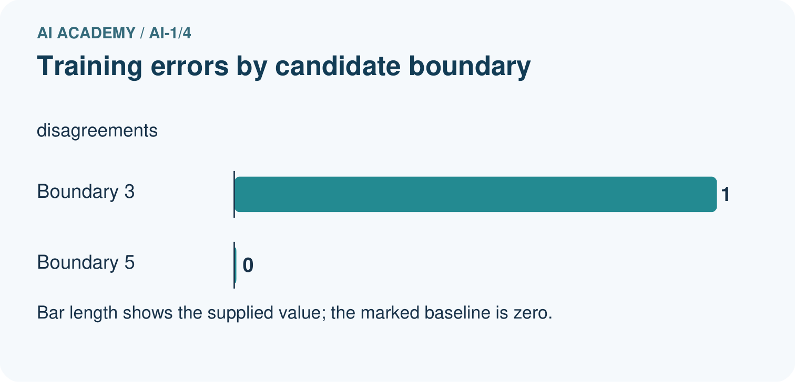
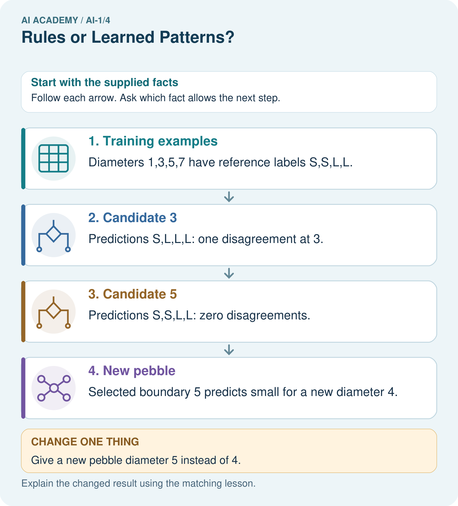
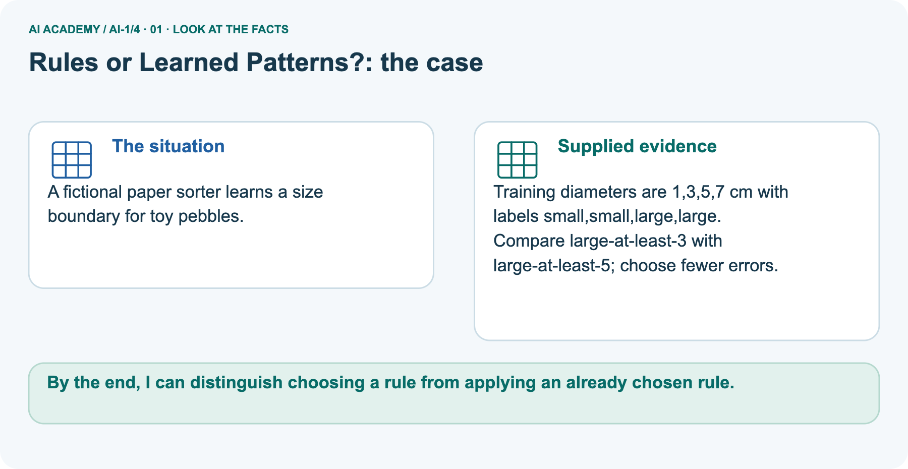
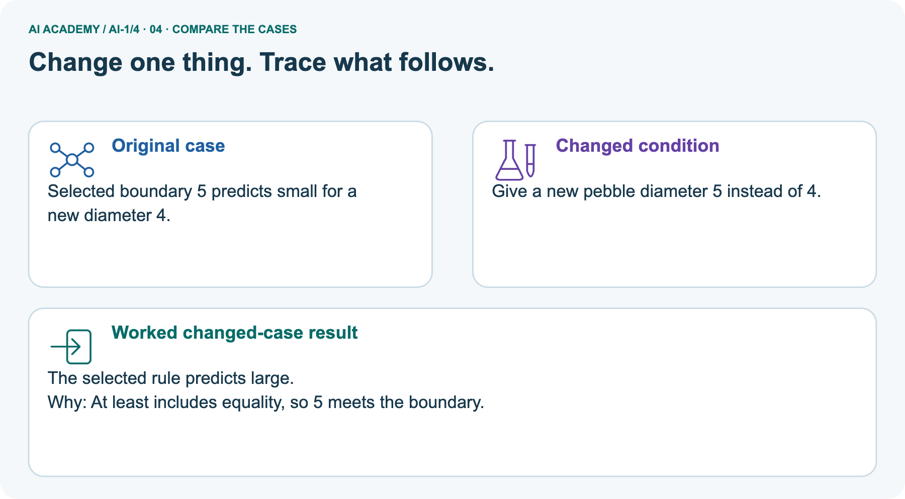
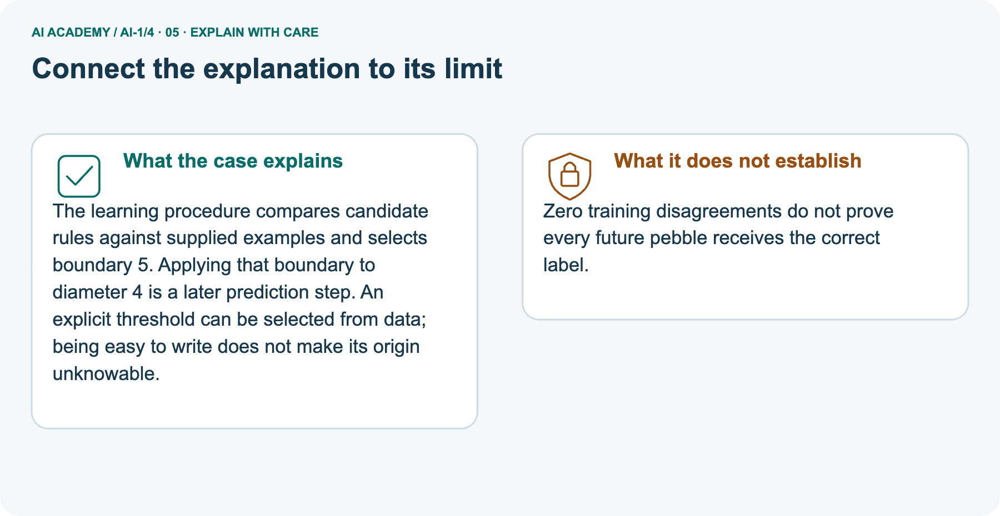
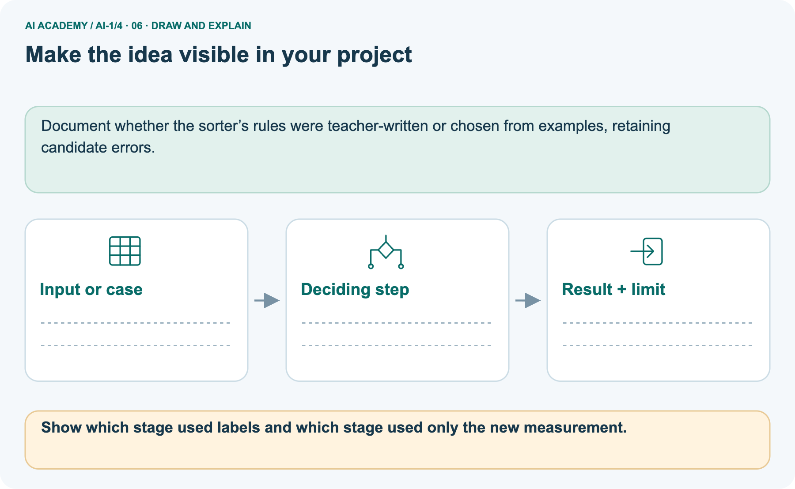

AI Academy · Level 1 · Grade 6 · Week 4 · Teacher guide
Rules or Learned Patterns?
Learn to understand, design, build, test and explain AI systems responsibly.
Project: Helpful Classroom Sorter
THE CONNECTED WEEK
Teach fitting as an inspectable procedure.
Model the candidate predictions and errors, separate fitting from execution, and reserve the new length classifier for independent evidence.
Keep one habit: Look for complete prediction lists, justified selection and a limited claim.
Main lesson · Section 1
Prepare the rule-selection lesson
Keep fitting, prediction and independent checking distinct throughout the week.
Learning goals and precision
Primary target: Execute a stated rule including its boundary
This is a genuine small fitting procedure: choose among candidate thresholds by empirical disagreement count. It is intentionally executable on paper.
Do not equate all AI with machine learning or all handwritten rules with non-AI; the lesson isolates fitting versus execution.
The fictional label convention avoids implying that size words have universal numerical definitions.
By the end, I can distinguish choosing a rule from applying an already chosen rule.
What to prepare
Use the supplied scenario, student illustrations and blank paper. For numeric work, offer counters or a calculator after learners show the setup. Fictional records are supplied; personal data and paid accounts are unnecessary.
Width and length cards with labels on a separate sheet
Two candidate-threshold cards for each exercise
A trace-table frame with input, prediction, supplied label and disagreement columns
Main teaching plan
| Session | Sequence and minutes | Resources |
|---|---|---|
| Session 1 · Understand · 45 min | 0–7: recall and prerequisite; 7–15: inspect the concrete case and predict; 15–30: teacher models the worked trace; 30–40: learners explain a step using the text and visual; 40–45: check the core idea. | Use Your mission, Notice the evidence, See how it works, Compare the cases, Words that unlock the idea and Follow a worked example; record the brief recall in the workbook. |
| Session 2 · Practise · 45 min | 0–5: retrieve the procedure; 5–15: W2 completion practice; 15–23: explain and check with a partner; 23–30: each learner answers the misconception check; 30–40: targeted reteaching or a harder variation; 40–45: prepare the investigation. | Use Find and repair a mistake, Practise together, Run the investigation and Build your understanding; use the matching workbook W2 and misconception check. |
| Session 3 · Investigate and transfer · 45 min | 0–5: retrieve the decision rule; 5–20: investigate or trace; 20–30: start the independent case; 30–38: connect the project; 38–43: act on feedback; 43–45: plan the return check. | Use Run the investigation, Connect your project, Show what you know, Study a complete case and Try a new case independently. Allow extra time for the full task set. Use a coding lab only when this week actually provides one; Your lesson route is the planning section. |
This is a starting allocation of 135 minutes, not a validated duration. Preserve all named topics. Schedule extra time for connected examples, the full investigation, independent cases and project building.
Repeated copies of a case share one recorded attempt; they are not new evidence.
Retrieve measurement and mechanism evidence
Without opening the old lesson, explain one key idea from Sensors Are Messengers. Give an example and a mistake that the idea helps you avoid.
Look for: Describe a measurement using its quantity, value, unit and conditions
Reference example, not the only acceptable wording: Keep the observed value 24 and approximate time lunchtime; mark the unit, exact time if needed, location, exposure and device identity as unknown or to be checked.
A suitable completed record needs air temperature, value, unit and relevant conditions. Invented degrees C or shade is not an observation.
Without opening the old lesson, explain one key idea from AI or Not?. Give an example and a mistake that the idea helps you avoid.
Look for: Distinguish an observed result from an explanation of how it was produced
Reference example, not the only acceptable wording: Observations include that the door opened when the visitor approached and that its label says intelligent entrance.
A useful question asks whether a written sensor threshold, a model fitted on examples or a person controls opening. The label is an observed marketing claim, not mechanism evidence.
The warning stays off at exactly 28. Check that the reading is the intended quantity in degrees C and is relevant to the time and conditions.
Earlier wording, alternative practice and picture transcripts
Teach the learning cycle
Retrieval answer guidance
Sensors Are Messengers
AI or Not?
Use the student module and workbook section with this exact week title. The worked case, independent question and answers below form one aligned lesson sequence.
What the learner must demonstrate
Sorter A follows 'red left, blue right'. Sorter B was trained using labelled red and blue cards. Both send a purple card left. Does their shared output show that they used the same process? What evidence is missing?
Concept to explain
Fixed instructions and learned behavior can look similar but arise differently.
| Term | Meaning |
|---|---|
| fixed rule | instruction written directly in advance |
| learned pattern | relationship fitted from examples |
| training | process that adjusts a model from examples |
| inference | using the finished model on a new input |
Prepare the class
This compact option is not the full-week schedule. Use the main teaching cycle and allow extra sessions for the investigation, independent work and project.
Allow 80 minutes: recall 8; explanation 12; worked demonstration 15; guided practice 20; independent assessment 15; project and reflection 10. Extend the lab into a second session when needed.
Preparation for the connected explanation
Readiness answer
End goal for the pictorial case
This added worked case illustrates the week’s main idea. Retain all original and connected topics; schedule its practice within the teaching cycle.
Main lesson · Section 2
Teach how the rule was obtained
Model a full prediction list before an error count, then distinguish fitting evidence from later performance.
Introduce the two routes to a threshold
A paper sorting task describes imaginary cards. Each card has a width in centimetres and a recorded label, narrow or wide. One person writes a rule from a design requirement: label a card wide when its width is at least 5 cm.
Another person compares several candidate thresholds with labelled examples and chooses the one with fewest disagreements. Both may end up using the same threshold, but they selected it in different ways.
Executing a rule means applying it to an input. Fitting means using examples to select or adjust the rule or model. A fitted model can be very simple.
We do not need a brain-like picture or a complicated computer to study the difference between selecting a rule and using it.
In this exercise the labels are supplied by the task designer. They are not a universal definition of wide, and a centimetre value alone would not determine every possible meaning of that word.
State what the recorded labels mean in the task before counting disagreements.
Explain the boundary and human choices
For threshold t, our rule predicts wide when width is at least t and narrow otherwise. At least includes equality: with t=5, width 5 is wide. Changing at least to greater than changes the rule and may change the error count.
A fitting procedure also contains choices people made: the feature, candidate thresholds, label definition and way of counting errors. Calling a threshold learned does not remove human responsibility for those choices.
This course concentrates on modern machine learning. AI also includes symbolic and rule-based approaches. A simple automatic switch or robot body is not, by itself, evidence of AI.
Discuss how the system reasons or learns, rather than judging appearance.
Model the pebble fitting task
A fictional paper sorter learns a size boundary for toy pebbles.
Training diameters are 1,3,5,7 cm with labels small,small,large,large.
Compare large-at-least-3 with large-at-least-5; choose fewer errors.






The learning procedure compares candidate rules against supplied examples and selects boundary 5. Applying that boundary to diameter 4 is a later prediction step.
An explicit threshold can be selected from data; being easy to write does not make its origin unknowable.
Change only the prediction input
Change: Give a new pebble diameter 5 instead of 4.
Prediction: The selected rule predicts large.
Reason: At least includes equality, so 5 meets the boundary.
Limit the training result
Zero training disagreements do not prove every future pebble receives the correct label.
Show that equal scores can hide different predictions
| Width in cm | Supplied label | Threshold 3 prediction | Threshold 5 prediction |
|---|---|---|---|
| 2 | narrow | narrow | narrow |
| 4 | narrow | wide | narrow |
| 6 | wide | wide | wide |
| 8 | wide | wide | wide |
Apply threshold 3 to each width before checking the label. Only width 4 disagrees, so its error count is 1. Threshold 5 agrees on all four examples, so its error count is 0. Of these two candidates, this procedure selects 5.
Zero disagreements here means it fits these four labels; it is not a guarantee about all future cards.
There can be ties. Threshold 6 also agrees on these four examples because 6 is included by at least. Thresholds 5 and 6 predict differently for width 5, which is absent from the fitting set.
The available examples therefore do not uniquely determine how that width should be labelled. A procedure needs an explicit tie rule, and we should record the unresolved case.
Use the picture deliberately
Use the diagram and verbal explanation together. Ask learners to match a sentence to a specific visual step; do not assign learners fixed visual or auditory learning styles.
Cover the result. Ask learners to name the inputs and predict the next step. Uncover one step, connect the icon to the actual procedure, and explain its evidence. Then change the supplied condition and compare.
The picture is a representation; it does not document execution of a real AI model.
Earlier wording, alternative practice and picture transcripts
Explain the mechanism
Follow the information instead of imagining magic inside the machine.
1. Input — information entering
INPUT a motion value or image values
2. Process — the deciding step
PROCESS run an explicit if/then rule or a learned classifier
3. Output — the result
OUTPUT turn on a light or predict an animal label
CORE IDEA Fixed instructions and learned behavior can look similar but arise differently.
UNDER THE HOOD A fixed program's decision logic is specified directly by people. A learned model's parameters are fitted from examples.
Both are software, both may be complex, and both can fail; the distinction is how the decision behavior was produced.
Draw a fresh example with all three stages:
Every step connects a claim to observable evidence.
CASE A motion light and an animal recognizer both react to input, but one checks a written condition while the other uses patterns learned from examples.
STEP 1 — OBSERVE a motion value or image values
STEP 2 — TRACE run an explicit if/then rule or a learned classifier
STEP 3 — CONCLUDE turn on a light or predict an animal label
MODEL REASONING The motion light follows a directly written sensor condition. The animal recogniser uses a model fitted on labelled examples.
Observing that both react to input does not tell us how their decisions were produced.
DO NOT OVERCLAIM Do not use complicated versus simple as a substitute for fixed versus learned.
What new evidence could change this answer?
Teacher precision note
Concrete teaching case
Sorter A follows a written red-card-left rule. Sorter B is fitted using labelled leaves.
How were their decision processes obtained? Where should A send blue cards?
Exact explanation to model
A was explicitly programmed; B learned parameters from examples. Blue-card handling is unspecified, so request a rule. Both systems can fail.
Explain the added worked example
Key terms
| Term | Meaning |
|---|---|
| Feature | A recorded property used as an input to a decision or model |
| Label | A recorded category or target associated with an example |
| Threshold | A boundary value used in a comparison |
| Fitting | Choosing or adjusting a model using examples |
| Error count | The number of predictions that disagree with the comparison labels |
Model the reasoning aloud
Use the complete worked example below before asking learners to complete W2. Reveal a small part, invite a prediction, then explain the deciding step.
These teacher notes contain solutions; do not reveal the independent case answer during modelling.
| Thinking move | Teacher prompt |
|---|---|
| Plan | What is given? What is the question? Which procedure fits these facts? |
| Do | Point to each input and intermediate step in the worked trace. Name the rule that allows the next step. |
| Check | Does the output answer the question? Which assumption or limitation prevents a larger claim? |
A pictorial worked case: Rules or Learned Patterns?
The facts we will use






Read the picture one step at a time
Why this result follows
What this example does not establish
Change one thing in the pictured case
Ask while showing the picture
Main lesson · Section 3
Guide row-by-row predictions, then remove help
Collect each learner’s comparison before accepting the error count.
Prompt before revealing the key
Completion task: Widths 1, 3, 5, 7 have labels narrow, narrow, wide, wide. For candidates 3 and 5, list all predictions using wide when width is at least the candidate. Count disagreements and select the lower-error candidate.
Expected reasoning and fading help
Teacher check: Threshold 3: narrow, wide, wide, wide; one disagreement at 3. Threshold 5: narrow, narrow, wide, wide; zero disagreements. Select 5 among these candidates based on these examples only.
Start by identifying the given inputs together. Leave the intermediate steps blank. If needed, model one step, then withdraw that help on the next step. Move to a full trace only when the partial trace is understood.
For partners, alternate explainer and checker; collect a response from every learner before discussion.
Check the simplicity misconception
Use the worked case for Rules and learned patterns. Proposed explanation: “A learned rule cannot be written simply”. Decide whether this explanation is supported.
Point to the step or supplied fact that decides; explain your repair if needed.
Expected correction: The selection procedure can fit a single threshold. Complexity is not the definition of fitting.
Collect explanations, not only yes/no votes. If a misunderstanding is common, re-model the relevant step for the class.
If it affects a few learners, give a short targeted group explanation while others solve a more demanding variation.
Check label use and the changed boundary
Show which stage used labels and which stage used only the new measurement.
Selection used all four training labels. The new prediction compares diameter with 5 without seeing its reference label.
Changed-case reasoning: The selected rule predicts large. At least includes equality, so 5 meets the boundary.
Collect each learner’s explanation before discussion. Use the first missing connection between input, deciding step and result to choose support. This question is worked-case practice, not fresh mastery evidence.
Keep each learner explaining
Ask: Which facts are given, and which would we have to assume? Learners mark relevant details before discussing answers.
Say: Predict first. Show the rule, information path or calculation that would produce the result. A correct guess is not yet an explanation.
In pairs, one learner solves while the other checks evidence; exchange roles. Remove the worked answer before independent assessment.
Earlier wording, alternative practice and picture transcripts
Demonstrate and guide practice
Board sequence
Write the given facts: Sorter A follows a written red-card-left rule. Sorter B is fitted using labelled leaves.
Write the question to explain: How were their decision processes obtained? Where should A send blue cards?
Reveal after predictions: A was explicitly programmed; B learned parameters from examples. Blue-card handling is unspecified, so request a rule. Both systems can fail.
Keep the green-go and fruit-label question for optional later practice. Reserve the new length classifier for the first independent attempt before feedback.
Classroom dialogue
Reveal reasoning one step at a time. Explain why a tempting alternative fails. Write units and denominators for arithmetic, trace conditions for decisions, and identify supporting sources for claims.
Model these guided questions
For widths 1,3,5,7, threshold 3 predicts narrow,wide,wide,wide and has one error; threshold 5 predicts narrow,narrow,wide,wide and has zero.
The choice establishes a lower fitting error among these candidates on these examples.
The exit distinction is selecting a parameter using labelled examples versus keeping the parameter fixed while making a prediction on a new input.
Case-specific teaching sequence
| Stage | Teacher action |
|---|---|
| Session 1 start 0 to 7 minutes | Retrieve the equality boundary from the temperature rule. Compare greater than with at least. |
| 7 to 20 minutes | Contrast a requirement-selected threshold with an example-selected threshold. Read the fitting and use diagram. |
| 20 to 33 minutes | Work through all rows for candidates 3 and 5. Count errors only after writing predictions. |
| 33 to 45 minutes | Pairs complete W1 and W2. Ask each learner to explain where the fitting decision occurs. |
| Session 2 start 0 to 8 minutes | Show the tie between 5 and 6. Ask for an input that makes them disagree. |
| 8 to 23 minutes | Complete W3 and discuss what the fitting data does not determine. |
| 23 to 38 minutes | Collect W4 independently with comparison labels for the new case hidden. |
| 38 to 45 minutes | Discuss W5 and the exit explanation. Save the selected rule and its known limitations. |
Reduce help deliberately
Individual reasoning check
Pictorial practice question
Reasoned teacher answer
Main lesson · Section 4
Run the mechanism-evidence comparison
Use supplied notes and distinguish a paper trace from a real classifier test.
Supplied cases and answer guidance
Use the student evidence cards: the motion light has an explicit three-way rule, the animal recognizer has a supplied fitting history, and the vacuum has no process notes. Expected motion trace: yes → ON, no → OFF, missing → request a sensor check. The recognizer’s fitting history establishes a learned process; its displayed CAT alone establishes neither origin nor correctness. Vacuum mechanism remains unknown. Reserve the new length classifier for the individual first attempt.
Run and record the comparison
Complete the task: Compare a motion light with an animal recognizer.
Keep a normal case and an edge case clearly separated.
Record what happened—even when it does not match your prediction.
Explain the result, one limitation, and the next useful test.
Keep an inspectable record
| Record | What to capture |
|---|---|
| Input or evidence | Exact data, instruction or claim |
| Expected result | Answer or safe fallback declared before the run |
| Observed result | Actual result, including errors |
| Explanation | Rule, calculation or evidence explaining the outcome |
| Next test | One justified change and a new prediction |
Diagnose the first misunderstanding
A learned rule cannot be written simply: The selection procedure can fit a single threshold. Complexity is not the definition of fitting.
Zero fitting errors means the model is correct everywhere: Use thresholds 5 and 6, then input 5. Identical fitting scores leave different unseen predictions.
The label is available when predicting: Cover the new case's label until the prediction is recorded. Separate information available at fitting time from prediction time.
Choose support from the response
| What the response shows | Next teaching action |
|---|---|
| Missing or misread facts | Read the case aloud, mark supplied versus unknown facts, and let the learner restate it. |
| Wrong procedure | Return to the deciding step in the worked case. Contrast it with the proposed incorrect explanation. |
| Arithmetic or implementation error | Trace intermediate values or lines; preserve the first mismatch and retry that step. |
| Correct result without a reason | Ask for a trace and a changed case before marking independent understanding. |
| An unsupported wider claim | Ask which supplied evidence supports the claim and which further observation would be needed. |
Offer an oral explanation, drawing, enlarged visual or fewer examples when that removes a reading/writing barrier. Keep the same reasoning goal.
Stretch secure learners by changing a boundary or assumption and asking them to defend the effect, not simply by assigning more of the same questions.
Earlier wording, alternative practice and picture transcripts
Run the weekly evidence lab
Predict first, test honestly, and explain what the evidence means.
State your prediction before the result is known.
INDEPENDENCE After support is removed, repeat the proof with a fresh case.
Make the lab runnable
Use the supplied motion-light, recognizer and vacuum evidence cards for shared practice. Trace the complete motion rule, including missing input. Reserve the new length classifier for the individual first attempt. Keep predicted paper-trace results separate from what the pair actually recorded.
Diagnose and reteach
CLAIM TO REPAIR Every rule must have been learned from data.
For guessing, return to given facts and request a trace. For vocabulary without application, use one example and one non-example. For arithmetic errors, check the setup before the calculation.
Finish with a different uncoached case before recording mastery.
Address these additional misconceptions
Match the support to the first error
Main lesson · Section 5
Assess the new length classifier
Use this selected key only after the first independent attempt.
Selected independent question and answer
Selected case: A fictional sorting task has lengths 2, 5, 7, 9 cm with labels short, short, long, long. Candidate rules predict long when length is at least 5 or at least 7.
List predictions and errors for both, choose one, and predict a new length of 6 before any label is revealed. State one limit of your conclusion.
Threshold 5 predicts short, long, long, long: one error at 5. Threshold 7 predicts short, short, long, long: zero errors. Choose 7 and predict short for 6.
This fits these supplied labels among these two candidates; the new label, labels at other lengths and general performance are not established.
Judge explanation, trace and limits
| Dimension | Evidence required |
|---|---|
| Explanation | Names the applicable idea or procedure and ties it to the supplied facts. |
| Trace and result | Preserves the given inputs and shows the relevant intermediate steps; distinguishes a prediction from an observed execution. |
| Limits | States the assumptions, missing evidence or conditions under which the result would change. |
Record each dimension as not yet, with support, or independent. Accept a valid alternative procedure with a defensible trace.
Do not penalise an honestly recorded model failure if the learner correctly explains its evidence and limits.
Give one usable repair action
Name the earliest unsupported step and give one action to repair it. Have the learner make that repair now and explain why. Then assess the relevant skill on a fresh, fully specified case.
Confirm it was not previously practised with feedback; solve and check the new case before assigning it. A follow-up design prompt is a starting brief, not automatically an equivalent test.
W1: execute the boundary
Use wide when width is at least 5 cm. Predict the label for widths 4, 5 and 6. Then state what changes if the rule uses greater than 5 instead.
At least 5 gives narrow, wide, wide. Greater than 5 gives narrow, narrow, wide. Only the equality case changes among these inputs.
W2: compare fitting errors
Widths 1, 3, 5, 7 have labels narrow, narrow, wide, wide. For candidates 3 and 5, list all predictions using wide when width is at least the candidate. Count disagreements and select the lower-error candidate.
Threshold 3: narrow, wide, wide, wide; one disagreement at 3. Threshold 5: narrow, narrow, wide, wide; zero disagreements. Select 5 among these candidates based on these examples only.
W3: expose the tie
For the worked widths 2, 4, 6, 8 with labels narrow, narrow, wide, wide, compare thresholds 5 and 6. Give a width where they predict differently. Explain why the four fitting examples cannot decide that case.
Both thresholds have zero disagreements. At width 5, threshold 5 predicts wide while threshold 6 predicts narrow.
No fitting example is width 5 or otherwise distinguishes these thresholds; their equal fitting score does not establish a unique answer there.
W5: keep the final check honest
A learner sees that their final-check card was predicted incorrectly, changes the threshold to match it and reports the same card as an unseen test. Explain the problem and propose a valid next check.
The revealed check label influenced the revised threshold, so it became part of development. Record the revision and use a different, unrevealed set after fixing the rule.
Do not report the adapted-to case as an independent final test.
Earlier wording, alternative practice and picture transcripts
Assess and explain the answers
Worked case answer
A was explicitly programmed; B learned parameters from examples. Blue-card handling is unspecified, so request a rule. Both systems can fail.
Additional transfer practice: origins of decision rules
System A uses the written rule green means go. System B learns fruit labels from example photographs. Who supplies A's rule? What changes when B is trained on different examples?
Reasoned rule-origin practice answer
A's designer writes the rule. Training examples can change B's learned behaviour. A new set of examples does not automatically improve B; test it on separate examples.
What counts as evidence
| Criterion | 0 points | 1 point | 2 points |
|---|---|---|---|
| Result | Incorrect or absent | Partly correct | Correct with necessary conditions |
| Reasoning | No supporting trace | Some steps | Clear mechanism, calculation or source support |
| Limit | Overclaims certainty | Vague limitation | Relevant uncertainty or missing fact |
| Transfer | Copies without adapting | Adapts with prompts | Solves a changed case independently |
Use 6/8 as a classroom checkpoint, with 2 required for both Result and Reasoning. This is a proposed teaching rule, not a validated certification threshold.
Do not count a coached answer as independent mastery; correct unsafe or unsupported claims regardless of total.
Feedback
Ask the learner to find the evidence that challenges this claim: “Every rule must have been learned from data.” Keep the first attempt and an uncoached retry separate.
Original transfer answer
No. A follows supplied instructions but purple handling is unspecified; B applies a learned pattern. Inspect A's complete rule and B's training and prediction process.
The same output can arise from different mechanisms and neither result establishes correctness without a purple-card policy.
Explanations for the additional workbook examples
W1 Execute before fitting
W2 Complete the supported comparison
W3 Make a tie visible
W4 Fit a new paper classifier
A fictional sorting task has lengths 2, 5, 7, 9 cm with labels short, short, long, long. Candidate rules predict long when length is at least 5 or at least 7.
List predictions and errors for both, choose one, and predict a new length of 6 before any label is revealed. State one limit of your conclusion.
Threshold 5 predicts short, long, long, long: one error at 5. Threshold 7 predicts short, short, long, long: zero errors. Choose 7 and predict short for 6.
This fits these supplied labels among these two candidates; the new label, labels at other lengths and general performance are not established.
W5 Keep the check honest
Assess independent transfer
Selected case answer
Feedback that the learner uses
Main lesson · Section 6
Connect, adapt and revisit
Keep the fitting record and revisit the distinction on a changed task.
Project evidence to retain
Draw a fixed-rule version and a learned-pattern version of the Classroom Sorter; state what evidence would justify the learned version.
Keep the decision, input, result, explanation and remaining limitation in the project evidence record. Retrieve this record next week rather than restarting the project.
Document whether the sorter’s rules were teacher-written or chosen from examples, retaining candidate errors.
Support without losing the reasoning
Use physical cards, spoken explanations and a three-stage drawing. Read aloud without giving the answer. Stretch: compare two mechanisms with the same visible output and explain what evidence distinguishes them.
Use a number line with a closed dot at the threshold and arrows to the long or wide region. Permit oral explanation with a completed prediction table.
Extension: ask learners to find every whole-number threshold tied for zero errors in the worked example and explain what a tie-breaking rule does.
W4 is secure when both prediction lists and counts are correct, threshold 7 is selected, length 6 is predicted short and the learner limits the claim to available evidence.
An arithmetic correction alone is insufficient if the fitting versus prediction distinction is missing. Retest with different lengths and thresholds after reteaching.
Plan the delayed check
Suggested return points in this level: ai-1/5, ai-1/7, ai-1/10. Use actual classroom dates, adjusting for holidays and gaps. One, three and six teaching weeks are scheduling choices, not a claimed optimal spacing.
At a delayed check, ask for the idea from memory and a changed application. Compare with the earlier independent response and record support used.
For a new level, revisit the previous capstone before checking the new prerequisites.
| Record | Teacher evidence |
|---|---|
| Learner code and date | |
| Concept and case used; prior exposure | |
| Explanation / trace / limits | |
| Support and first repair | |
| Changed case and delayed outcome | |
| Next teaching action |
Use the evidence to choose reteaching or the next step. A completed page, confidence rating or attractive project does not by itself demonstrate understanding.
Bridge to numerical pictures
Ask for one decision the learner can now justify and one situation requiring more evidence or human review. Confidence ratings are separate from correct independent performance.
Next: Week 5: Pictures Become Numbers. Retrieve today’s evidence and identify what carries forward and what is new.
Week 5 asks how an image becomes numerical input and what spatial information must be preserved before a model can use it.
Earlier wording, alternative practice and picture transcripts
Connect and extend learning
Helpful Classroom Sorter
Support and stretch
Exit reflection
Bridge to the next week
Support and fresh reassessment
Plan the delayed return
Project evidence from this case
Reference bank and extra practice
Choose the reference that helps your next step.
Reference: alternative planning checklist
Reference · Section 7
Reference: alternative planning checklist
Use this to inspect the main route rather than repeating a second lesson.
Preparation and schedule
Teaching target: Execute a stated rule including its boundary
Prepare the labelled worked-case picture, the matching workbook, fictional input cards and a place for individual responses. No paid AI account is required for the paper reasoning activities.
| Session | Plan | Resources |
|---|---|---|
| Session 1 · Understand · 45 min | 0–7: recall and prerequisite; 7–15: inspect the concrete case and predict; 15–30: teacher models the worked trace; 30–40: learners explain a step using the text and visual; 40–45: check the core idea. | Use Your mission, Notice the evidence, See how it works, Compare the cases, Words that unlock the idea and Follow a worked example; record the brief recall in the workbook. |
| Session 2 · Practise · 45 min | 0–5: retrieve the procedure; 5–15: W2 completion practice; 15–23: explain and check with a partner; 23–30: each learner answers the misconception check; 30–40: targeted reteaching or a harder variation; 40–45: prepare the investigation. | Use Find and repair a mistake, Practise together, Run the investigation and Build your understanding; use the matching workbook W2 and misconception check. |
| Session 3 · Investigate and transfer · 45 min | 0–5: retrieve the decision rule; 5–20: investigate or trace; 20–30: start the independent case; 30–38: connect the project; 38–43: act on feedback; 43–45: plan the return check. | Use Run the investigation, Connect your project, Show what you know, Study a complete case and Try a new case independently. Allow extra time for the full task set. Use a coding lab only when this week actually provides one; Your lesson route is the planning section. |
Practice and assessment reminders
Before class, solve the supported practice: Widths 1, 3, 5, 7 have labels narrow, narrow, wide, wide. For candidates 3 and 5, list all predictions using wide when width is at least the candidate.
Count disagreements and select the lower-error candidate.
Reasoned practice answer: Threshold 3: narrow, wide, wide, wide; one disagreement at 3. Threshold 5: narrow, narrow, wide, wide; zero disagreements. Select 5 among these candidates based on these examples only.
Check every learner before discussion: Use the worked case for Rules and learned patterns. Proposed explanation: “A learned rule cannot be written simply”. Decide whether this explanation is supported.
Point to the step or supplied fact that decides; explain your repair if needed.
Misconception repair: The selection procedure can fit a single threshold. Complexity is not the definition of fitting.
Support: read the exact case aloud, enlarge the labelled picture, supply input cards and model only the first deciding step. Accept a spoken explanation or drawing; retain the reasoning goal.
Extension: Give a new pebble diameter 5 instead of 4. Require a prediction and a reason before comparing. Expected result: The selected rule predicts large. Reason: At least includes equality, so 5 meets the boundary.
Independent assessment: withhold the reserved answer until the learner has attempted the new case. Record support separately from correctness.
| Criterion | Not yet | With support | Independent |
|---|---|---|---|
| Explanation | Names an answer without a deciding fact | Uses a hint to link fact and decision | Explains the deciding fact in own words |
| Trace or test | Cannot connect input and result | Completes steps with prompts | Traces or tests a changed case accurately |
| Limits and revision | Claims more than evidence supports | Names a limit after a prompt | States a defensible limit and useful next test |
Project checkpoint: Frame the need. Name the user, the problem, allowed inputs and a safe simple starting method.
Use the weekly teacher answer for topic-specific reasoning. A saved progress tick is an activity record; judge mastery from the learner’s explanation and evidence.
Reference: feedback and records
Reference · Section 8
Reference: feedback and records
The paper fitting task needs no coding account; use tools to retain useful evidence.
Separate practice and independent evidence
Use the two formative questions as supported practice, not as independent mastery scores. Discuss the deciding evidence rather than accepting a guessed selection.
The feedback comes from the reviewed public worked case. Do not reveal the separately reserved independent teacher answer until the learner has attempted that case.
Repair and portfolio records
Use the earlier worked-explanation links to address a specific missing building block, then return to the current question. Adapt this suggestion after observing the learner; it is not an automatic diagnosis.
Collect the completed-work portfolio as evidence. Record support separately from correctness, and assess explanation, trace/test and limitations. Progress ticks and quiz selections alone do not establish mastery.
Earlier wording, alternative practice and picture transcripts
This week has no code block. Use this routine when a later lesson includes an executable lab.
Ask students to predict before running code. Preserve errors and actual outputs; collect a changed test and an explanation. The branch-boundary and indexing lessons deliberately include failure cases.
Reference: teach with the six pictures
Reference · Section 9
Reference: teach with the six pictures
Choose the graphic for the teaching move and connect it to the explanation.
01. Rules or Learned Patterns?: the case



A fictional paper sorter learns a size boundary for toy pebbles. Supplied facts: Training diameters are 1,3,5,7 cm with labels small,small,large,large. Compare large-at-least-3 with large-at-least-5; choose fewer errors.
Point to the given fact that matters most. Explain why it matters.
Teacher prompt: Point to the given fact that matters most. Explain why it matters. Ask learners to describe one label or arrow in ordinary words. Use the adjacent transcript if the image is difficult to see.
02. Follow the deciding steps
Training examples: Diameters 1,3,5,7 have reference labels S,S,L,L. → Candidate 3: Predictions S,L,L,L: one disagreement at 3. → Candidate 5: Predictions S,S,L,L: zero disagreements. → New pebble: Selected boundary 5 predicts small for a new diameter 4.
Point to each numbered stage and explain which recorded input it uses.
Teacher prompt: Point to each numbered stage and explain which recorded input it uses. Ask learners to describe one label or arrow in ordinary words. Use the adjacent transcript if the image is difficult to see.
03. Training errors by candidate boundary
Training errors by candidate boundary. Units: disagreements. Boundary 3: 1. Boundary 5: 0.
Read the labels and values. Explain the relationship the model shows.
Teacher prompt: Read the labels and values. Explain the relationship the model shows. Ask learners to describe one label or arrow in ordinary words. Use the adjacent transcript if the image is difficult to see.
Check row/column meanings, units and denominators before discussing a difference. Supplied toy values are not real class or model results.
04. Change one thing. Trace what follows.



Original case: Selected boundary 5 predicts small for a new diameter 4. Changed condition: Give a new pebble diameter 5 instead of 4. Expected result: The selected rule predicts large.
Reason: At least includes equality, so 5 meets the boundary.
Predict before checking the worked changed-case result. Name what changed and what the supplied facts allow you to conclude.
Teacher prompt: Predict before checking the worked changed-case result. Name what changed and what the supplied facts allow you to conclude. Ask learners to describe one label or arrow in ordinary words.
Use the adjacent transcript if the image is difficult to see. Changed-case reasoning: At least includes equality, so 5 meets the boundary.
05. Connect the explanation to its limit



The learning procedure compares candidate rules against supplied examples and selects boundary 5. Applying that boundary to diameter 4 is a later prediction step.
An explicit threshold can be selected from data; being easy to write does not make its origin unknowable. Limit: Zero training disagreements do not prove every future pebble receives the correct label.
Explain the case, then point to a limit on the claim.
Teacher prompt: Explain the case, then point to a limit on the claim. Ask learners to describe one label or arrow in ordinary words. Use the adjacent transcript if the image is difficult to see.
Keep the stated scope: Zero training disagreements do not prove every future pebble receives the correct label.
06. Make the idea visible in your project



Document whether the sorter’s rules were teacher-written or chosen from examples, retaining candidate errors. Draw your input, deciding step, result and limit.
Supported question: Show which stage used labels and which stage used only the new measurement.
Draw your project trace and justify the deciding step using evidence.
Teacher prompt: Draw your project trace and justify the deciding step using evidence. Ask learners to describe one label or arrow in ordinary words. Use the adjacent transcript if the image is difficult to see.
Supported practice key: Selection used all four training labels. The new prediction compares diameter with 5 without seeing its reference label.
Earlier wording, alternative practice and picture transcripts
Use one picture at a time. Hide a worked result before asking for a prediction, then reveal it for feedback. These are supported teaching cases; retain the separate independent assessment for a fresh first attempt.